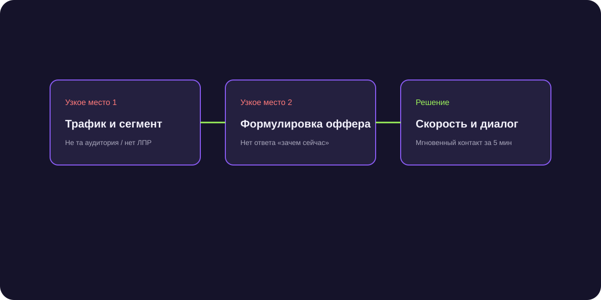

Как увеличить количество заявок: системная работа с трафиком и конверсией
Как увеличить количество заявок — это задача, требующая не просто механического вливания денег в рекламу, а синхронной работы над конверсией посадочных страниц, открытием новых каналов и автоматизацией первого контакта.

Короткий ответ
Чтобы системно увеличить количество заявок в B2B, необходимо работать в трех направлениях: повышать конверсию существующих точек входа за счет понятных офферов и снижения трения в формах, подключать прямые исходящие каналы коммуникации (Telegram-аутрич, партнерские программы) и внедрять мгновенную квалификацию обращений, удерживающую внимание клиента в первые секунды.
Три рычага масштабирования потока лидов
Математика роста входящего пайплайна раскладывается на три простых множителя:
- Охват целевых компаний: сколько новых ЛПР каждую неделю узнают о вашем предложении.
- Конверсия в первое действие: какой процент увидевших оффер соглашается вступить в переписку или оставить телефон.
- Доходимость до квалификации: сколько обратившихся реально выходят на предметный разговор с экспертом.
Подключение прямого исходящего канала в Telegram
Если входящая реклама перегрета, самый быстрый способ получить заявки — точечный аутрич:
- Соберите актуальный список целевых компаний по отрасли и финансовым показателям.
- Определите профили директоров и руководителей профильных направлений.
- Запустите персонализированный диалог от лица эксперта с предложением разобрать отраслевой кейс или получить аудит.
- Передавайте ответивших лидов в CRM для назначения встреч.
Сокращение барьеров входа на посадочных страницах
Замените статичные формы сбора контактов на интерактивный квиз или прямой переход в Telegram-бот. Возможность задать вопрос в мессенджере без ожидания звонка поднимает конверсию трафика в заявку в 1.5–2 раза.
Рост потока заявок со 15 до 68 в неделю для логистической компании
Подключение Telegram-агента NextGen позволило компании выйти на импортеров товаров из Азии: бот мониторил профильные B2B-сообщества и адресно выходил на диалог с менеджерами ВЭД. Результат — пятикратный рост квалифицированных лидов.